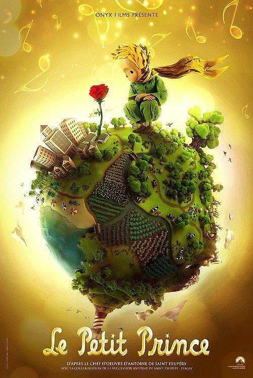
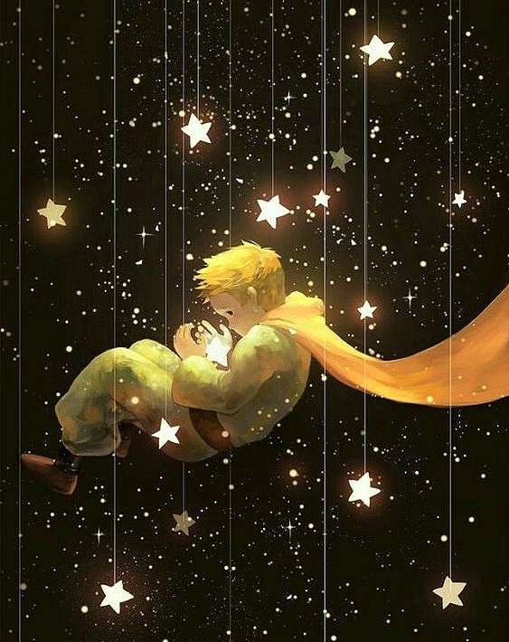
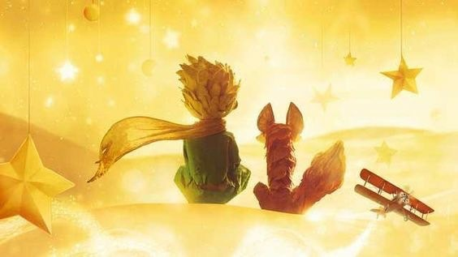
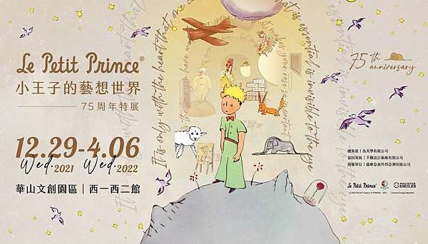

小王子
基本介紹
由法國作家安東尼．聖修伯里創作的《小王子》，陪伴許多人的童年時光，長大後再回過頭來看，有許多不同的體悟和感觸，充滿療癒的力量，《小王子》成為許多人心中最喜愛的作品。
前言
希望所有讀到這本書的小孩都能原諒我，首先我將這本書獻給一位大人。我有相當充足的理由：這個大人是我在這世界上最要好的朋友。還有另一個理由：這位大人了解每件事，即使是有關小孩的書也一樣。以及第三個理由：這個大人住在法國，他在飢餓寒冷之際需要一些鼓勵。如果我所說的這些理由都還不夠好的話，請不要介意我把這本書獻給曾經是小孩的他。
名言語錄
- 所有的大人都是孩子，只要你未曾遺忘。
All grown-ups were once a child, though, only a few people remember.
- 星星真美，因為有一朵看不見的花。
The stars are beautiful, because of a flower that cannot be seen.
- 如果你要馴服一個人，就要冒著掉眼淚的危險。
If you choose to be domesticated, that is about to assume the risk of a little cry.
- 沙漠之所以美麗，是因為在某個角落藏著一口井。
What makes the desert beautiful is that somewhere it hides a well.
- 最大的問題不是長大，而是遺忘。
The biggest problem is not grow up, but forgotten.
- 把心愛的人放在心裡，他便永遠活在你的心中。
Put the one you love in the heart, he will live forever in your heart.
- 只有用心才能看清一切，真正重要的東西用眼睛是看不見的。
It is only with the heart that one can see rightly;what is essential is invisible to the eyes.
- 當一個人炫耀他自己的智慧時，往往會誤入歧途。
When a person is to show off his own wisdom, often wondered what it would be misguided.
- 要想結識蝴蝶，就得先忍受兩三隻毛毛蟲的叮咬。
If you want to make a butterfly, you have to put up with two or three caterpillars bites.
- 無論是房子、星星和沙漠，是因為藏有某種看不見的東西，才使他們看起來這麼美。
The house, the stars, the desert – what gives them their beauty is something that is invisible.
小王子圖片
 
相關活動
《小王子的藝想世界：75 周年特展》為題，於 2021 年 12 月 29 日至 2022 年 4 月 6 日，在台北華山 1914 文創園區西一西二館開展，忠實呈現 5 大故事軸線，透過奇幻氛圍的 12 個劇場式展間與沈浸式互動投影，喜歡《小王子》中溫馨、療癒情節的你，或許可以到這個活動裡尋找屬於自己心中的「小王子」。

動畫短片